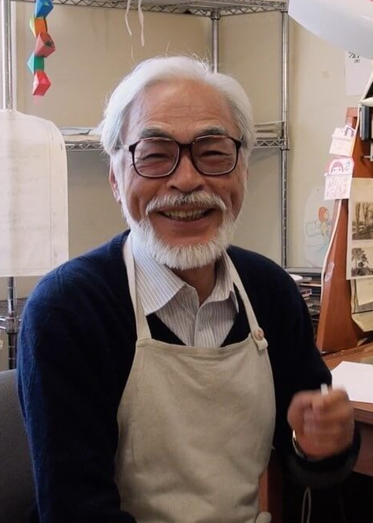
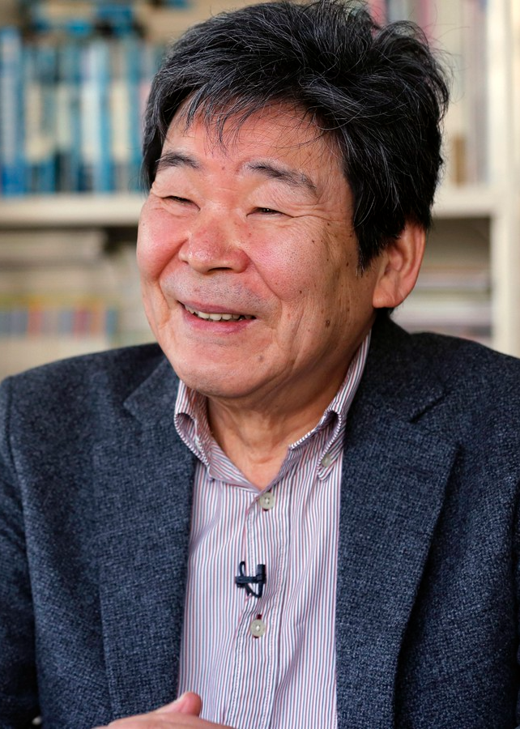
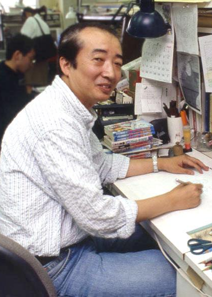
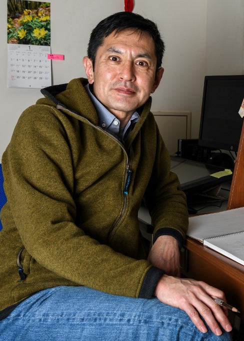
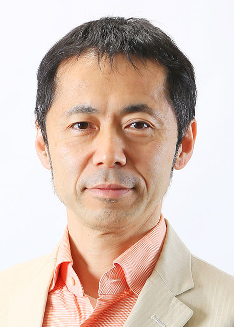
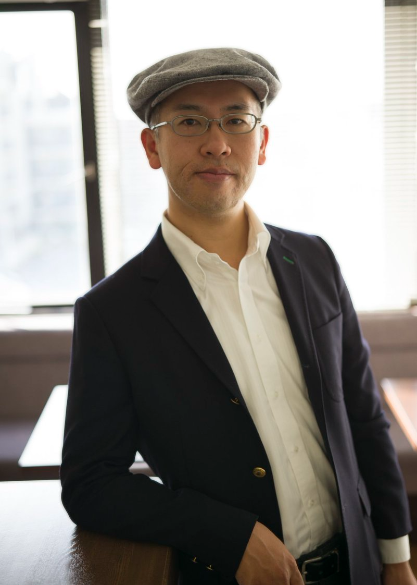

Hayao Miyazaki
Hayao Miyazaki é um animador, cineasta, roteirista, escritor e artista de mangá japonês. É co-fundador do Studio Ghibli, uma companhia de cinema e animação, tendo conquistado reconhecimento e aclamação
Filmografia do diretorIsao Takahata
Isao Takahata foi um diretor, produtor e roteirista japonês, co-fundador do Studio Ghibli junto com seu parceiro de longa data Hayao Miyazaki e os colaboradores Toshio Suzuki e Yasuyoshi Tokuma.
Filmografia do diretorYoshifumi Kondō
Yoshifumi Kondō foi um animador japonês que trabalhou para o Studio Ghibli em seus últimos anos. Ele nasceu em Gosen, Prefeitura de Niigata, Japão. Trabalhou como diretor de animação em Anne of Green Gables, Sherlock Hound, Kiki's Delivery Service, Only Yesterday e Princess Mononoke.
Filmografia do diretorGorō Miyazaki
Goro Miyazaki é um paisagista e diretor de cinema japonês, filho do também diretor e animador Hayao Miyazaki. Ele inicialmente escolheu seguir uma carreira diferente de seu pai, assim formou-se paisagista na Universidade Shinshu e trabalhou por anos nessa profissão.
Filmografia do diretorHiroyuki Morita
Hiroyuki Morita, é um diretor e animador japonês. Trabalhou como animador em projetos como Akira e Lupin III. Ele é mais conhecido por seu trabalho como diretor no Estúdio Ghibli e no filme Neko no ongaeshi.
Filmografia do diretorHiromasa Yonebayashi
Hiromasa Yonebayashi é um animador e cineasta japonês. Como reconhecimento, foi nomeado ao Oscar 2016 na categoria de Melhor Filme de Animação por Omoide no Marnie.
Filmografia do diretor